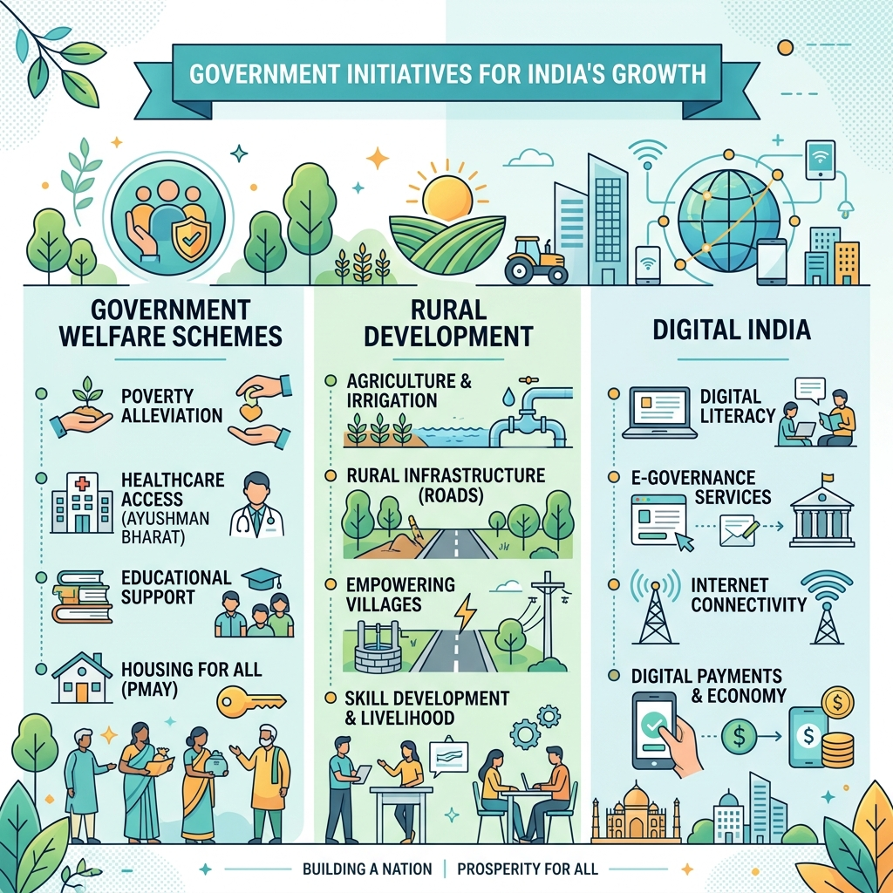

Economy in News — RBI Rates, GDP, Reports & Indices
📂 Current Affairs & Indian Economy⚖️ Weight: 1.7📊 Mapped Questions: 27🎯 Expected: 3-5 Qs
📚 Core Content & PYQ Alignment
70th BPSC 4 Jan PYQFiscal vs Monetary Tools: "Which among the following is a tool of Fiscal Policy?" — answer: Taxes. Credit Ceiling, Bank Rate and CRR are monetary tools of the RBI; taxes and public expenditure belong to the Government's fiscal policy. BPSC's favourite economy classification trap.
70th BPSC 13 Dec PYQRBI Inflation Forecast: "According to the RBI, what is the forecast for headline inflation in Financial Year 2025?" — answer: 4.5% (the December 2024 MPC projection). BPSC lifts the RBI's CPI projection straight from the monetary-policy press release — track the current projection every cycle (FY27: 5.1% per the June 2026 MPC).
69th BPSC PYQFiscal Deficit History: Statement question from the Economic Survey — the Union Government's fiscal deficit had reached 9.2% of GDP in pandemic-year FY21 and moderated thereafter (6.7% in FY22). Learn the deficit glide path: 9.2% (FY21) → 6.7% (FY22) → 4.4% (FY26 RE) → 4.3% (FY27 BE).
70th BPSC 4 Jan PYQBihar's Sectoral Shares: "The 60.2 percent share in GSDP of Bihar in 2019-20 was of —" answer: Service Sector. In the latest Bihar Economic Survey (2025-26) the tertiary sector contributes 54.8% of GSDP, secondary 26.8%, primary 18.3%.
💡 Deep-dive ready: Rate-corridor mechanics, MPC members & tenure, monetary transmission, RBI functions and the full 2024–26 repo chronology:
Monetary Policy Detail →
A. RBI and Monetary Policy VERIFIED JUL 2026
As of the June 2026 MPC (announced June 5, 2026), the policy stance is neutral and the repo rate has been held for a fourth consecutive meeting. The next MPC meets in early August 2026 — after the 72nd BPSC Prelims, so the numbers below are what the exam will test.
Policy Rate / Ratio (as of July 2026)
Value
One-liner
Repo Rate
5.25%
Rate at which RBI lends short-term funds to banks against government securities — the policy signal
Standing Deposit Facility (SDF)
5.00%
Floor of the LAF corridor since April 2022 (Repo − 25 bps); banks park surplus funds with RBI without collateral
Marginal Standing Facility (MSF)
5.50%
Ceiling of the corridor (Repo + 25 bps); emergency overnight borrowing window
Bank Rate
5.50%
Aligned with MSF; penal rate for CRR/SLR shortfalls
Cash Reserve Ratio (CRR)
3.00%
Cash banks must keep with RBI (no interest); cut from 4.5% in stages since Dec 2024
Statutory Liquidity Ratio (SLR)
18.00%
Liquid assets (G-secs, cash, gold) banks must hold as % of NDTL
Fixed Reverse Repo
3.35%
Legacy rate — operative floor is now the SDF
Date
MPC Decision
Repo After
Note
Feb 7, 2025
Cut 25 bps
6.25%
First cut in ~5 years; Sanjay Malhotra's first full easing cycle
Apr 9, 2025
Cut 25 bps
6.00%
Stance changed to accommodative
Jun 6, 2025
Cut 50 bps
5.50%
Front-loaded cut; CRR cut path announced (4.0% → 3.0%)
Aug / Oct 2025
Held
5.50%
Pause to assess transmission
Dec 5, 2025
Cut 25 bps
5.25%
Inflation at multi-year lows; FY26 GDP projected 7.3%
Feb 2026
Held
5.25%
Neutral stance retained
Apr 8, 2026
Held (unanimous)
5.25%
FY27 GDP projected 6.9%, CPI 4.6%
Jun 5, 2026
Held
5.25%
FY27 GDP revised to 6.6%, CPI up to 5.1% (energy prices, weak global demand)
Cumulative easing:125 bps since February 2025 (6.50% → 5.25%) — 25 + 25 + 50 + 25 across four cuts.
MPC composition:6 members — 3 from RBI (Governor as chair, Deputy Governor in charge of monetary policy, one RBI officer) + 3 external members nominated by the Central Government (4-year term). Decisions by majority vote; the Governor has a casting vote in case of a tie. Meets bi-monthly (six times a year).
Inflation target (FIT): CPI headline 4% ± 2% (band 2–6%), mandated by the 2016 amendment to the RBI Act, 1934 (Section 45ZA). If inflation breaches the band for 3 consecutive quarters, RBI must explain to the Government.
Policy tools: Liquidity Adjustment Facility (repo/SDF/MSF corridor around the weighted average call rate), Open Market Operations, CRR/SLR, Market Stabilisation Scheme, forex swaps. SDF replaced the fixed reverse repo as the corridor floor in April 2022.
RBI Governor:Sanjay Malhotra (26th Governor; took office December 11, 2024; former Revenue Secretary). RBI HQ: Mumbai; established April 1, 1935; nationalised January 1, 1949.
🧠 Mnemonic — Corridor Ladder: "S-R-M climbs by 25" SDF (5.00) → Repo (5.25) → MSF/Bank Rate (5.50). Each step = 25 bps. Banks park money at the lowest rung (SDF), borrow normally at the middle (Repo), and borrow in emergencies at the top (MSF). Cut path: "6.5 → 5.25" via 25-25-50-25 (Feb-Apr-Jun-Dec 2025).
B. GDP and National Accounts — The 2026 Reset MAJOR
The single biggest economy story of 2026: on February 27, 2026, MoSPI released a new GDP series with base year 2022-23, replacing the 2011-12 series (which itself dates to the 2015 revision). A full recalculated back series is promised by December 2026.
What changed: double deflation for agriculture & manufacturing (more accurate real value added); Proportional Denton Benchmarking to align quarterly with annual estimates; new data sources — GST records, e-Vahan vehicle registrations, natural gas consumption; better capture of the digital/gig economy. The 2022-23 base is a post-COVID "normal" year.
Headline revisions: FY2023-24 growth revised down to 7.2% (from 9.2%); FY2024-25 revised up to 7.1% (from 6.5%); FY2025-26 (Second Advance Estimate) = 7.6% (up from the First Advance Estimate of 7.4%).
FY26 size: real GDP ≈ ₹322.58 lakh crore (vs ₹299.89 lakh crore in FY25, rebased); nominal GDP growth ≈ 8.6%.
Quarter / Year
Real GDP Growth (New Series)
Old-Series Print (for trap value)
Q1 FY26 (Apr–Jun 2025)
6.7%
7.8% (revised down)
Q2 FY26 (Jul–Sep 2025)
8.4%
8.2% (revised up)
Q3 FY26 (Oct–Dec 2025)
7.8%
— (first print under new series)
FY2025-26 full year (SAE)
7.6%
7.4% (FAE, Jan 2026)
FY2024-25
7.1%
6.5%
FY2023-24
7.2%
9.2%
Demand side (Economic Survey 2025-26): Private Final Consumption Expenditure grew 7.0%, reaching 61.5% of GDP — highest since 2012; Gross Fixed Capital Formation grew 7.8%, investment rate ≈30% of GDP.
GVA vs GDP: GDP = GVA + taxes on products − subsidies on products. GVA measures sectoral value creation (agri + industry + services); GDP is the headline number BPSC asks for.
Nominal vs Real: nominal = current prices (includes inflation); real = constant prices (base 2022-23 now). The nominal print matters for fiscal ratios (deficit-to-GDP).
New CPI series (base 2024): MoSPI rolled out a revised Consumer Price Index with base year 2024 in early 2026 (replacing the 2012 base), with updated weights reflecting post-pandemic consumption patterns. CPI inflation had fallen to 1.7% (Apr–Dec 2025) — the lowest of the old series — before RBI projected 5.1% for FY27 (Jun 2026).
IIP & WPI: IIP base 2011-12 (8 core industries ≈40.3% weight); WPI base 2011-12. Industrial GVA hit a six-quarter high of 8.3% in Q3 FY26; manufacturing posted double-digit growth in FY24 and FY26.
C. Union Budget & Fiscal 2026-27 VERIFIED
Presented by Finance Minister Nirmala Sitharaman on February 1, 2026 — her 9th consecutive Budget (Annual Financial Statement under Article 112 — a 70th BPSC PYQ fact).
Item (FY 2026-27 BE)
Value
Total expenditure
₹53,47,315 crore (+7.7% over FY26 RE); interest payments = 26% of it
Receipts (excl. borrowings)
₹36,51,547 crore (+7.2% over FY26 RE)
Fiscal deficit
4.3% of GDP (vs 4.4% in FY26 RE; 9.2% peak in FY21)
Revenue deficit
1.5% of GDP (same as FY26 RE)
Capital expenditure (public capex)
₹12.2 lakh crore (up from ₹11.2 lakh crore in FY26)
Central govt debt
55.6% of GDP in FY27; glide path to ~50% of GDP by March 2031 (FY31)
Nominal GDP growth assumed
10%
Tax slabs
No change in income-tax slabs for AY 2026-27
Headline announcements: High-Level Committee on Banking for Viksit Bharat; Semiconductor Mission 2.0; Biopharma SHAKTI scheme (₹10,000 cr / 5 yrs); SME Growth Fund (₹10,000 cr); Rare Earth Corridors in Odisha, Kerala, Andhra Pradesh, Tamil Nadu; 7 high-speed rail corridors; City Economic Regions (₹5,000 cr each); 200 legacy industrial clusters to be revived.
Economic Survey 2025-26 (tabled January 29, 2026; prepared by the Dept of Economic Affairs under CEA V. Anantha Nageswaran): FY27 growth projected at 6.8–7.2%; potential growth upgraded to ~7%; CPI inflation 1.7% (historic low); forex reserves crossed $701.4 billion (~12 months import cover); CAD ~1.0% of GDP; India = fastest-growing major economy for the 4th consecutive year; theme — "Sprint and Marathon Together".
Fiscal-framework note: the FY22 Budget's commitment — deficit below 4.5% of GDP by FY26 — was met (4.4%); the FY26 Budget switched the anchor to a debt path (50% ± 1% of GDP by FY31), which FY27's 4.3% deficit continues.
D. Reports and Indices — The Matching Bank HOT
BPSC's standard question: "Index X is released by whom?" (69th BPSC asked this for the Global Gender Gap Report — answer: World Economic Forum). Dashes = latest rank not verified at page-build time; revise from the latest edition before the exam.
Index / Report
Publisher
India's Latest Rank / Value
Topper
Global Innovation Index 2025
WIPO (World Intellectual Property Organization)
38th
Switzerland
Human Development Index 2025
UNDP
130th (HDI 0.685)
Iceland
Global Hunger Index
Concern Worldwide + Welthungerhilfe
— (2024: 105th of 127)
—
Corruption Perceptions Index
Transparency International
— (2024: 96th of 180, score 38)
Denmark
Henley Passport Index
Henley & Partners (IATA data)
—
Singapore
World Happiness Report
UN SDSN / Wellbeing Research Centre, Oxford
— (2025: 118th)
Finland
IMD World Competitiveness Ranking
IMD Business School, Lausanne
— (2025: 41st)
Switzerland
Logistics Performance Index 2023 (latest ed.)
World Bank
38th of 139
Singapore
SDG India Index 2023-24 (latest ed.)
NITI Aayog
India score 71
Kerala & Uttarakhand (79)
Ease of Doing Business
World Bank — DISCONTINUED after 2020 report (India was 63rd); successor = B-READY (Business Ready), first report 2024
63rd (2020, final)
New Zealand (2020)
Global Gender Gap Report (69th BPSC PYQ)
World Economic Forum
—
Iceland
🧠 Mnemonic — Index↔Publisher Pairs Innovation = Intellectual Property (GII → WIPO) • Development = Development Programme (HDI → UNDP) • Hunger = Helpers (GHI → Concern + Welthungerhilfe) • Corruption = Transparency (CPI → Transparency International) • Logistics & Doing Business = World Bank • SDG India = NITI Aayog • Gender Gap & Competitiveness = Geneva-ish think tanks (WEF and IMD respectively).
E. Money & Banking Miscellany 2025-26 NEW
Forex reserves at record: crossed $701.4 billion in late January 2026 (Economic Survey) — roughly 12 months of merchandise import cover; $686.2 bn in December 2025 (RBI).
UPI keeps scaling: the world's largest real-time payments platform processed ~131 billion transactions in FY2024-25; monthly volumes ran at 18–20 billion through 2025-26. RuPay + UPI remain the backbone of India's digital-payments story.
Digital Rupee (e₹ / CBDC): RBI's retail and wholesale pilots continue to expand — programmability (targeted DBT transfers) and offline capability are the tested frontiers; cross-border CBDC linkages are being explored with partner central banks.
Banking health: scheduled commercial banks' GNPA ratio is at a multi-decadal low (~2.5%); credit-deposit ratio ≈78%; all new floating-rate retail/MSME loans are linked to an External Benchmark (mostly the repo) — improving transmission.
Sovereign rating upgrade: S&P raised India to 'BBB' (from BBB−) in August 2025 — the first upgrade in 18 years — citing fiscal consolidation and growth resilience.
Kisan Rin Portal (KRP): the RBI–NABARD digital KCC lending portal (asked in the 71st BPSC) — digitises Kisan Credit Card sanction and disbursement, replacing the older prompt-repayment incentive arrangements run with nationalised banks, RRBs and co-operative banks.
📊 The 2025-26 Easing Cycle at a Glance
Four cuts, three pauses, 125 bps total. Memorise the ladder — BPSC loves "what is the current repo rate" one-liners (70th BPSC asked the inflation projection straight from the MPC).
Feb 2025 — 6.50% → 6.25%
Apr 2025 — 6.25% → 6.00%
Jun 2025 — 6.00% → 5.50% (50 bps)
Dec 2025 — 5.50% → 5.25%
Feb / Apr / Jun 2026 — HELD at 5.25%
📋 Fact Matrix — Indicator | Value | As-Of
Indicator
Value
As-Of Date
Repo Rate
5.25%
Jun 5, 2026 MPC (next: Aug 2026)
SDF / MSF / Bank Rate
5.00% / 5.50% / 5.50%
Jun 2026
CRR / SLR
3.00% / 18.00%
CRR staged cuts completed 2025
Cumulative repo cuts
125 bps (6.50% → 5.25%)
Feb 2025 – Dec 2025
CPI inflation target
4% ± 2%
FIT framework (RBI Act, 2016)
CPI inflation print
1.7% (historic low); FY27 proj 5.1%
Apr–Dec 2025 / Jun 2026 MPC
FY26 real GDP growth (SAE)
7.6% (new 2022-23 series)
Feb 27, 2026 (MoSPI)
Q3 FY26 real GDP growth
7.8%
Oct–Dec 2025
FY25 growth (rebased)
7.1% (was 6.5%)
Feb 2026 revision
FY27 growth projections
RBI 6.6% • Eco Survey 6.8–7.2% • S&P 7.1%
Jun 2026 / Jan 2026 / Mar 2026
FY27 fiscal deficit
4.3% of GDP
Union Budget 2026-27 (Feb 1, 2026)
FY27 capital expenditure
₹12.2 lakh crore
Union Budget 2026-27
Central debt
55.6% of GDP → ~50% by FY31
Union Budget 2026-27
Forex reserves
$701.4 billion (record)
Late January 2026
Bihar per-capita income
₹76,490 (current prices)
Bihar Economic Survey 2025-26 (FY25)
Bihar Budget size
₹3,47,590 crore (largest ever)
Feb 3, 2026
India's growth story: services exports, record forex reserves ($701 bn) and a 7.6% FY26 GDP print keep India the fastest-growing major economy for the fourth straight year.

Budget 2026-27: ₹12.2 lakh crore of public capex, Semiconductor Mission 2.0, Rare Earth Corridors and a 4.3% fiscal-deficit target on the road to ~50% debt-to-GDP by FY31.
🔶 Bihar Connection
🏛️ Bihar's Economy — The BPSC Angle
GSDP growth (Bihar Economic Survey 2025-26, 20th edition): FY2024-25 GSDP = ₹9,91,997 crore at current prices; growth of 13.1% (current prices) and 8.6% (constant prices) — above the national constant-price average of 6.5%. FY2025-26 growth estimated at 14.9% (GSDP ₹11.4 lakh crore).
Per-capita income — lowest in India: ₹76,490 (current prices; ₹40,973 constant). Per-capita NSDP at constant prices is just 31.7% of the all-India average — Bihar remains the poorest large state on this metric. District spread: Patna highest (₹1.31 lakh), Sheohar lowest (₹24,332).
Bihar Budget 2026-27 (presented Feb 3, 2026 by FM Bijendra Prasad Yadav): total outlay ₹3,47,589.76 crore — the largest in state history (FY26 was ~₹3.17 lakh crore); education gets the highest allocation (₹68,216 crore) — a repeat BPSC question pattern (70th BPSC asked this for the 2024-25 budget); capital expenditure ₹63,456 crore (18.26%); fiscal deficit 2.99% of GSDP, inside the 3% ceiling.
Central tax devolution: Bihar's share is 10.06% under the 15th Finance Commission — the second highest after Uttar Pradesh (~17.9%). Devolution + grants make up the bulk of Bihar's revenue receipts.
State debt: outstanding debt ≈ ₹3.74 lakh crore = 37.7% of GSDP (Bihar Economic Survey 2025-26).
GI & agri-economy one-liners:Mithila Makhana (GI, 2022) — Bihar produces ~90% of India's makhana, and the Union Budget 2025-26 announced a Makhana Board for Bihar; Shahi Litchi of Muzaffarpur (GI, 2018) — 70th BPSC asked which district leads litchi production (Muzaffarpur).
Migration & remittances: Bihar is India's largest source of inter-state out-migration (PLFS/Census); household remittances from workers in Delhi, Mumbai, Punjab and the Gulf are a lifeline estimated at a sizeable share of GSDP, which is why Bihar's consumption stays resilient despite low industrialisation. The Saat Nischay-3 agenda targets 1 crore jobs by 2030 to reverse the outflow.
🔗 Cross-Topic Connections
↔ Topic #1 (Govt Schemes & Policies): Budget 2026-27 is the funding engine for every scheme on that page — SME Growth Fund, Biopharma SHAKTI, Bihar's Jananayak Karpoori Thakur Kisan Samman Nidhi (₹9,000/yr). ↔ Topic #5 (Bilateral Relations): Trade deals (69th BPSC: ECTA with Australia), forex reserves, rupee trade settlement and RBI's cross-border CBDC pilots sit at the economy–diplomacy junction. ↔ Topic #8 (Science & Tech in News): Semiconductor Mission 2.0, Rare Earth Corridors, digital rupee (CBDC), UPI's fintech stack and the AI-jobs committee announced in Budget 2026-27.
📰 Current Relevance & Potential Traps (2025–26 Cycle)
Near-certain one-liner: "What is the current repo rate?" — 5.25% (held since Dec 2025; SDF 5.00%, MSF/Bank Rate 5.50%, CRR 3.00%, SLR 18%). The June 2026 hold is the last MPC before the exam.
Latest GDP print: Q3 FY26 = 7.8%; FY26 SAE = 7.6% — both under the new 2022-23 base series released Feb 27, 2026. Trap: old-series numbers (Q1 7.8%, Q2 8.2%, FY25 6.5%) were revised (6.7%, 8.4%, 7.1%). Quote the NEW series.
Budget numbers to memorise: fiscal deficit 4.3% of GDP, capex ₹12.2 lakh crore, debt 55.6% of GDP heading to ~50% by FY31, total expenditure ₹53.47 lakh crore; Economic Survey FY27 band 6.8–7.2%.
Index ranks (verified): GII 2025 = 38th; HDI 2025 = 130th; LPI 2023 = 38th of 139; SDG India Index score 71 (Kerala & Uttarakhand top). Publishers are the matching goldmine — GII↔WIPO, HDI↔UNDP, GHI↔Concern/Welthungerhilfe, CPI↔Transparency International, Gender Gap↔WEF (69th BPSC PYQ).
Bihar one-liners: per-capita income ₹76,490 (lowest among states, ~1/3rd of national average); Budget 2026-27 = ₹3.47 lakh crore with education on top; GSDP growth 8.6% constant (FY25); devolution share 10.06% (2nd after UP).
Classic traps: fiscal tools (taxes, expenditure) vs monetary tools (CRR, repo, bank rate — 70th BPSC); GDP vs GVA (+ net taxes); SDF is the corridor FLOOR since Apr 2022 (not reverse repo); MPC has a casting vote with the Governor, and external members are 3 of 6; Ease of Doing Business is discontinued — B-READY is the successor, don't pick "latest EoDB rank".
Survey-sourcing habit: BPSC repeatedly cites "Economic Survey page no. X" (cement, Kisan Rin Portal, NFHS poverty in the 71st) — the Economic Survey 2025-26 and Bihar Economic Survey 2025-26 are the two documents to skim end-to-end before July 26.
🎯 Exam Predictions for 72nd BPSC
📋 Top 5 Predictions (72nd BPSC — Economy in News):
(1) Repo rate (HIGH): "What is the current repo rate?" → 5.25% (held since Dec 2025; June 2026 hold is last MPC before exam). SDF = 5.00%, MSF = 5.50%, CRR = 3.00%, SLR = 18%. Cross-link: Monetary Policy Detail →
(2) GDP new base (HIGH): "What is the new GDP base year?" → 2022-23 (released Feb 27, 2026). FY26 SAE = 7.6% under new series. Do NOT quote old-series numbers.
(3) Budget FY27 (MEDIUM): "What is the fiscal deficit target for FY27?" → 4.3% of GDP. Capex = ₹12.2 lakh crore. Total expenditure = ₹53.47 lakh crore.
(4) Bihar economy (MEDIUM): "What is Bihar's per capita income?" → ₹76,490 (lowest among states). Bihar Budget FY27 = ₹3.47 lakh crore. GSDP growth = 8.6% (constant prices, FY25).
Q1. As of July 2026, the policy repo rate set by the RBI's Monetary Policy Committee is:
✅ Correct Answer: (B) — The repo rate has been 5.25% since the December 2025 cut, and was held at the February, April and June 2026 MPC meetings. The next MPC is in August 2026 — after the exam.
Q2. Consider the following statements about the RBI's 2025-26 easing cycle:
1. The first cut came in February 2025, taking the repo rate from 6.50% to 6.25%.
2. The June 2025 MPC cut the repo rate by 50 basis points to 5.50%.
3. The December 2025 MPC cut the repo rate to 5.25%.
Which of the statements given above are correct?
✅ Correct Answer: (D) — All three are correct. The full path: 6.50% → 6.25% (Feb 2025) → 6.00% (Apr 2025) → 5.50% (Jun 2025, 50 bps) → 5.25% (Dec 2025): 125 bps of cumulative cuts.
Q3. The Standing Deposit Facility (SDF) rate, as of mid-2026, is:
✅ Correct Answer: (A) — SDF = Repo − 25 bps = 5.25% − 0.25% = 5.00%. The SDF has been the floor of the LAF corridor since April 2022 (replacing the fixed reverse repo, which stays at 3.35% as a legacy rate).
Q4. The Marginal Standing Facility (MSF) rate and the Bank Rate are currently:
✅ Correct Answer: (C) — MSF = Bank Rate = Repo + 25 bps = 5.50%. MSF is the emergency overnight borrowing window for banks; the Bank Rate is aligned with it.
Q5. Match the reserve ratios with their current values:
a) Cash Reserve Ratio — 1) 18.00%
b) Statutory Liquidity Ratio — 2) 3.00%
✅ Correct Answer: (B) — CRR = 3.00% (cash kept with RBI, earns no interest; cut from 4.5% in stages since December 2024). SLR = 18.00% (liquid assets including government securities, cash and gold).
Q6. Consider the following statements about the Monetary Policy Committee (MPC):
1. It has 6 members — 3 from the RBI and 3 external members nominated by the Central Government.
2. The RBI Governor has a casting vote in case of a tie.
3. External members hold office for four years.
Which of the statements given above are correct?
✅ Correct Answer: (D) — All three are correct. The MPC decides the repo rate by majority vote, meets bi-monthly, and the Governor chairs it with a casting vote. External members get a 4-year term.
Q7. Under India's Flexible Inflation Targeting framework, the CPI inflation target is:
✅ Correct Answer: (C) — The target is 4% CPI inflation with a 2–6% tolerance band (i.e., 4% ± 2%). Breach for three consecutive quarters triggers an RBI explanation to the Government.
Q8. The statutory basis for inflation targeting and the Monetary Policy Committee in India is:
✅ Correct Answer: (A) — The 2016 amendment to the RBI Act, 1934 inserted Chapter III-F (Section 45ZA onwards), mandating price stability as the primary objective "while keeping in mind the objective of growth" and creating the MPC.
Q9. The Standing Deposit Facility (SDF), introduced in April 2022, is significant because:
✅ Correct Answer: (B) — The SDF is an uncollateralised absorption window at Repo − 25 bps and is the operative floor of the LAF corridor since April 2022. The fixed reverse repo (3.35%) survives only as a legacy rate.
Q10. Who is the current Governor of the Reserve Bank of India (as of mid-2026)?
✅ Correct Answer: (B) — Sanjay Malhotra, the 26th RBI Governor, took office on December 11, 2024. A former Revenue Secretary, he has presided over the entire 2025-26 easing cycle (6.50% → 5.25%).
Q11. The total reduction in the repo rate since February 2025 is:
✅ Correct Answer: (A) — On June 5, 2026 the MPC held rates with a neutral stance, trimmed the FY27 growth projection to 6.6% (from 6.9% in April) and raised the FY27 CPI projection to 5.1% on energy prices and weak global demand.
Q13. The new GDP series released by MoSPI in February 2026 uses which base year?
✅ Correct Answer: (C) — The new National Accounts series (released February 27, 2026) shifts the base to 2022-23, replacing 2011-12. The last revision was in 2015. A full back series is due by December 2026.
Q14. Consider the following statements about the new GDP series:
1. It was released by the Ministry of Statistics and Programme Implementation (MoSPI).
2. It adopts double deflation for agriculture and manufacturing.
3. It uses Proportional Denton Benchmarking to align quarterly and annual estimates.
Which of the statements given above are correct?
✅ Correct Answer: (B) — All three are correct. The series also taps new data sources (GST records, e-Vahan registrations, gas consumption) and better captures the digital economy.
Q15. Under the new GDP series, India's real GDP growth for FY 2025-26 (Second Advance Estimate) is:
✅ Correct Answer: (B) — 7.6% per the Second Advance Estimates of February 27, 2026 (revised up from the 7.4% First Advance Estimate under the old series). Real GDP is estimated at about ₹322.6 lakh crore.
Q16. India's real GDP growth in Q3 (October–December 2025) of FY 2025-26 was:
✅ Correct Answer: (A) — Q3 FY26 grew 7.8%, moderating from a revised 8.4% in Q2 (Jul–Sep 2025) and 6.7% in Q1. India remained the fastest-growing major economy.
Q17. Consider the following statements about the rebasing revisions:
1. FY2023-24 growth was revised down from 9.2% to 7.2%.
2. FY2024-25 growth was revised up from 6.5% to 7.1%.
3. FY2025-26 growth is estimated at 7.6%.
Which of the statements given above are correct?
✅ Correct Answer: (D) — All three are correct. The downward revision of FY24 (9.2% → 7.2%) and upward revision of FY25 (6.5% → 7.1%) are classic BPSC trap material — always quote the new series.
Q18. The relationship between GDP and Gross Value Added (GVA) at basic prices is:
✅ Correct Answer: (A) — GDP = GVA at basic prices + product taxes − product subsidies. GVA shows sector-wise value creation; GDP is the headline demand-side aggregate.
Q19. The new Consumer Price Index (CPI) series rolled out by MoSPI in early 2026 uses which base year?
✅ Correct Answer: (B) — The revised CPI series uses base year 2024 (calendar year), replacing the 2012 base, with updated consumption weights. Note the distinction: CPI base = 2024; GDP base = 2022-23; WPI/IIP base = 2011-12.
Q20. As per the Economic Survey 2025-26, Private Final Consumption Expenditure (PFCE) in FY26:
✅ Correct Answer: (C) — Consumption is the growth engine: PFCE +7.0%, 61.5% of GDP (highest since 2012), driven by low inflation, rising real incomes and tax rationalisation. GFCF grew 7.8% (~30% of GDP).
Q21. The Union Budget 2026-27 targets a fiscal deficit of:
✅ Correct Answer: (B) — 4.3% of GDP in FY27 BE, down from 4.4% in FY26 RE. Glide path: 9.2% (FY21 pandemic peak) → 6.7% (FY22) → 4.4% (FY26) → 4.3% (FY27).
Q22. Public capital expenditure in the Union Budget 2026-27 has been raised to:
✅ Correct Answer: (D) — Capex rises from ₹11.2 lakh crore (FY26) to ₹12.2 lakh crore in FY27. Total expenditure is ₹53.47 lakh crore, of which interest payments alone take 26%.
Q23. Under the debt glide path adopted from the Budget 2025-26, the Central Government aims to bring its outstanding liabilities to around what level by March 2031?
✅ Correct Answer: (A) — The anchor is ~50% ± 1% of GDP by FY31 (March 2031). In FY27, central government outstanding liabilities are estimated at 55.6% of GDP.
Q24. The Economic Survey 2025-26 projects India's real GDP growth for FY 2026-27 in the range of:
✅ Correct Answer: (C) — The Survey (tabled January 29, 2026) projects 6.8–7.2% for FY27 and upgrades India's potential growth to ~7%. Compare: RBI's June 2026 projection is 6.6%; S&P's is 7.1%.
Q25. Consider the following statements about the Economic Survey 2025-26:
1. It was tabled in Parliament on January 29, 2026, a day before the Union Budget.
2. Headline CPI inflation fell to 1.7%, the lowest reading of the old CPI series.
3. India's foreign exchange reserves crossed $701 billion.
Which of the statements given above are correct?
✅ Correct Answer: (B) — All three are correct. The Survey is prepared by the Department of Economic Affairs under the Chief Economic Adviser (V. Anantha Nageswaran); forex reserves hit a record $701.4 bn (~12 months of import cover).
Q26. Match List-I (Index) with List-II (Publisher):
a) Global Innovation Index — 1) UNDP
b) Human Development Index — 2) WIPO
c) Logistics Performance Index — 3) World Bank
d) SDG India Index — 4) NITI Aayog
✅ Correct Answer: (A) — GII → WIPO; HDI → UNDP; LPI → World Bank; SDG India Index → NITI Aayog. The 69th BPSC asked the same pattern for the Global Gender Gap Report (World Economic Forum).
Q27. India's rank in the Global Innovation Index 2025 is:
✅ Correct Answer: (B) — India ranks 38th in the GII 2025 published by WIPO; Switzerland tops the index. India has climbed steadily from 81st in 2015.
Q28. In the Human Development Report 2025 (UNDP), India's rank is:
✅ Correct Answer: (C) — India ranks 130th with an HDI value of 0.685 in the 2025 HDR; Iceland tops the index. (Trap pair: World Happiness Report 2025 rank = 118th.)
Q29. In the World Bank's Logistics Performance Index 2023, India ranked:
✅ Correct Answer: (A) — India jumped to 38th of 139 in LPI 2023 (from 44th in 2018); Singapore tops. The LPI remains the latest edition as of mid-2026.
Q30. Consider the following statements:
1. The World Bank discontinued the Ease of Doing Business report after its 2020 edition.
2. India ranked 63rd in the final Ease of Doing Business report.
3. Its successor assessment is called B-READY (Business Ready).
Which of the statements given above are correct?
✅ Correct Answer: (D) — All three are correct. EoDB was scrapped after data-irregularity controversies; the first B-READY report came in 2024. Any option offering a "latest EoDB rank" is a trap.
Q31. Which among the following is a tool of Fiscal Policy? (70th BPSC pattern)
✅ Correct Answer: (D) — Taxes (and public expenditure) are fiscal tools of the Government. Credit ceiling, Bank Rate and CRR are monetary tools of the RBI — the exact classification the 70th BPSC tested.
Q32. As per the Bihar Economic Survey 2025-26, Bihar's per-capita income (current prices, FY 2024-25) is approximately:
✅ Correct Answer: (B) — ₹76,490 (₹40,973 at constant prices) — the lowest among Indian states; per-capita NSDP is only 31.7% of the all-India average. (₹1.31 lakh is Patna's district figure — a trap.)
Q33. Consider the following statements about Bihar's economy (2025-26 cycle):
1. Bihar's GSDP grew 8.6% at constant prices in 2024-25, above the national average.
2. The Bihar Budget 2026-27 is about ₹3.47 lakh crore, with education receiving the highest allocation.
3. Bihar's share of central tax devolution under the 15th Finance Commission is 10.06%, the second highest after Uttar Pradesh.
Which of the statements given above are correct?
✅ Correct Answer: (C) — All three are correct: 8.6% constant-price growth (vs national 6.5%); Budget ₹3,47,590 crore with education at ₹68,216 crore; 10.06% devolution share (UP ~17.9% is first).
Your Score
0/33
🔗 Reference Links
RBI — Monetary Policy Statements— MPC resolutions of Dec 2025, Feb 2026, Apr 2026 and Jun 2026: repo 5.25%, SDF 5.00%, MSF/Bank Rate 5.50%, CRR 3.00%, SLR 18%; FY27 GDP 6.6%, CPI 5.1% (June).